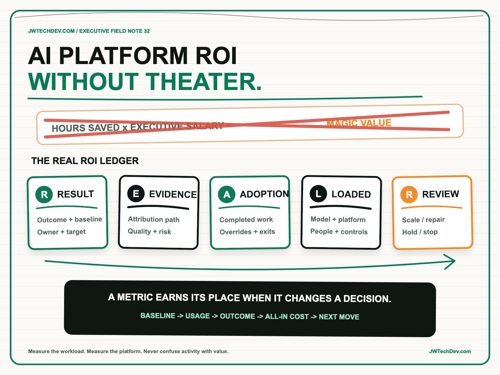

AI platform ROI without theater.
An AI platform should not be funded by multiplying optimistic hours saved by an executive hourly rate. Its value should be traceable from a business result to observed adoption, credible evidence, all-in cost, and a decision to scale, repair, or stop.

Quick answer
Measure enterprise AI platform ROI with a ledger, not a victory slide. For every funded workflow, record the business result, the evidence connecting the platform to that result, observed adoption, loaded cost, and the next executive decision. I call this the REAL ROI ledger: Result, Evidence, Adoption, Loaded cost, Review decision.
The platform should be measured at two levels. The workload level asks whether a specific use case improved an outcome. The platform level asks whether shared capabilities made multiple workloads faster, safer, cheaper, or easier to operate. If those claims cannot be supported separately, the organization cannot tell whether it has a valuable platform or several unrelated demos sharing a logo.
How ROI theater starts
The familiar formula is seductive: estimate minutes saved, multiply by every possible user, multiply again by a loaded salary, and present the total as value. The math can look precise while every assumption remains untested. A person receiving an AI summary may not use it. Saved time may not become additional capacity. A faster task may create more review work downstream. A pilot may avoid the identity, security, support, evaluation, integration, and change costs required for production.
Cost reduction is also only one category of value. AWS Cloud Adoption Framework connects transformation to revenue growth, operational efficiency, risk reduction, and improved environmental, social, and governance performance. Its business perspective recommends balancing financial and non-financial benefits while prioritizing initiatives against capacity, schedule, and strategic intent. An AI platform scorecard should therefore name the intended outcome before choosing the metric.
The other failure is measuring technology that nobody adopted. AWS describes transformation as an incremental path from envision and align through production launch and scale. A pilot demonstrates value only when it reaches real users, changes a workflow, and teaches the organization what must change before expansion. Model quality alone does not prove business value.
The REAL ROI ledger
Result. Name one outcome in the language of the business owner. Examples include shorter claim resolution time, higher support containment with stable customer satisfaction, fewer manual reconciliation exceptions, faster campaign production with fewer compliance corrections, or lower incident recovery time. Record the baseline, target, population, owner, and measurement window. “Use generative AI” is not a result.
Evidence. State why the observed change can reasonably be connected to the platform. Compare before and after periods, a controlled cohort, or a staged rollout when possible. Include quality, risk, and operational evidence beside the headline metric. NIST AI RMF organizes responsible AI work through Govern, Map, Measure, and Manage. That is a useful reminder that an outcome without risk evidence is incomplete, especially when an AI system can affect customers, employees, money, or access.
Adoption. Count eligible users, active users, completed workflows, successful outcomes, overrides, abandonments, and escalation. Adoption is not logins. It is repeated use that reaches the intended result. Segment the data by team, geography, workflow, and user role so one enthusiastic pilot group does not hide friction elsewhere.
Loaded cost. Include models, runtime, storage, networking, observability, evaluation, security controls, vendor licenses, data preparation, integration, support, change management, and human review. AWS Well-Architected defines cost optimization as achieving the outcome at the lowest price while meeting functional requirements. That is different from choosing the cheapest model or showing a low token bill while ignoring the rest of the system.
Review decision. Set the decision and date before the measurement period begins. The options should be explicit: scale, repair, hold, or stop. Scaling requires evidence that the outcome survives increased volume and broader users. Repair means the result matters but adoption, quality, economics, or controls are below threshold. Stopping is a valid portfolio action when evidence no longer supports the investment.
Measure workloads and the platform separately
A production AI platform creates shared value through identity, data access, tool gateways, evaluations, observability, deployment patterns, cost controls, and reusable components. Those capabilities should reduce the marginal effort and risk of the next approved workload. Measure that directly: time from approved idea to production, percentage of controls reused, evaluation coverage, production incident rate, cost per successful workflow, and time to recover or roll back.
Then keep workload economics visible. A platform can improve delivery speed while a particular use case still fails to create value. Conversely, one profitable workflow does not prove a broad platform investment. Executives need both views: the platform’s leverage across the portfolio and each workload’s contribution to a measurable result.
The AWS Enterprise Transformation Framework reinforces this cross-functional view by combining business and strategy, FinOps, operations, and people and culture. That is the right neighborhood for platform ROI. Finance needs unit economics. Operations needs reliability and support cost. Business owners need outcome evidence. Security and risk leaders need controls and exposure. Product and engineering need adoption and delivery feedback.
What to do next Monday
- Choose one production workflow. Do not begin with the entire AI portfolio. Name its business owner, user, baseline, target, and decision date.
- Open a REAL ledger. Create five rows for Result, Evidence, Adoption, Loaded cost, and Review decision. Mark unknowns instead of filling them with estimates disguised as facts.
- Define the evidence path. Decide what comparison, instrumentation, quality measure, and risk evidence would make the result credible.
- Calculate a unit. Use cost per successfully completed workflow, resolved case, accepted artifact, or another outcome unit instead of token cost alone.
- Separate platform from workload metrics. Track shared control reuse and time to production at the platform level; track business outcome and adoption at the workload level.
- Hold the review. Make the scale, repair, hold, or stop decision on schedule. Record why, what evidence was missing, and what the portfolio should learn.
ROI becomes useful when it changes a decision. If a metric cannot influence funding, design, adoption, or retirement, it is probably decoration.
I will be at AFROTECH in Houston November 2-6. If you are building an enterprise AI platform, global delivery organization, or technical go-to-market motion, I would be glad to compare notes.
Sources checked
Measure what can change a decision
Explore more practical frameworks for cloud architecture, production AI, governance, and technical leadership.
Get the free starter kit